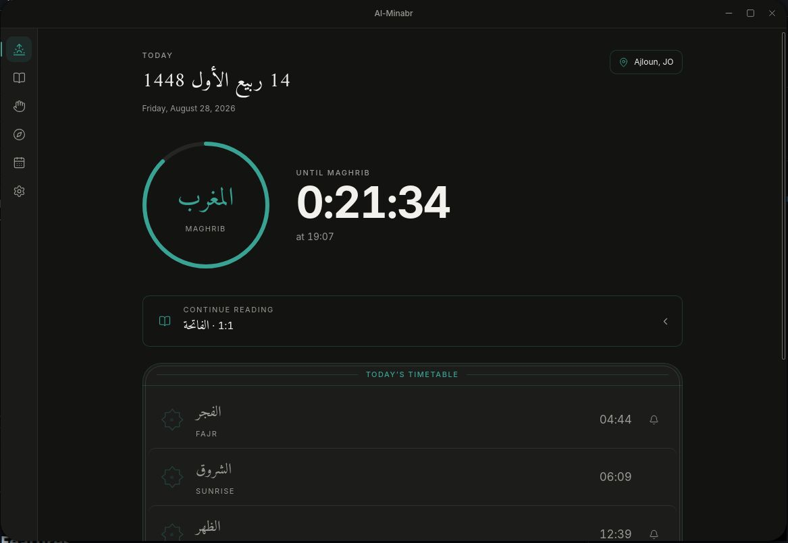

Al-Minbar
Prayer times, a Quran reader and athkar as a real Linux desktop application — computed locally, bundled, and working with no connection.

What it is
Almost every prayer-times application is a phone app, a website, or a web page wrapped in a window — and nearly all of them ask the network for something they could work out themselves. On a Linux desktop the options thin out to almost nothing.
Al-Minbar is a native desktop application. Prayer times are computed locally from your coordinates rather than fetched, the Quran text and athkar are bundled with the application, and nothing requires a connection at any point.
It covers athan audio with desktop notifications, a Quran reader with recitation audio, translation and tafsir, athkar, Qibla direction, and a Hijri calendar. It starts with your session and sits in the taskbar.
Built with Tauri and React so it stays small and starts fast, targeting Ubuntu, Debian and Mint — including current GNOME under Wayland. The interface is deliberately calm and rounded rather than utilitarian, and Arabic fonts can be swapped in-app to whichever face you prefer to read.
Open source
Follow the build or run it yourself.
Where it fits
Linux desktops
A category with almost no native option, served properly rather than as a browser tab.
Offline environments
Machines that are air-gapped, on poor connections, or simply not online when the time comes.
Focused work
Prayer notifications on the machine you are already working at, without reaching for a phone.
Reading and study
Recitation, translation and tafsir together in one reader rather than three tabs.
Privacy
No location sent to a server to get a time that basic astronomy already determines.
Shared machines
A lightweight install that starts with the session and stays out of the way.